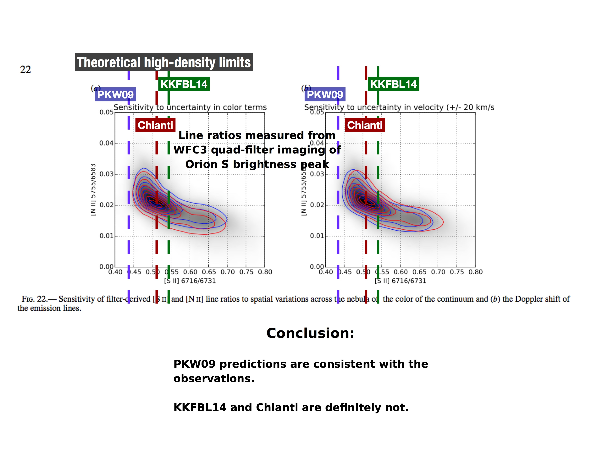

Table of Contents
1 Observations of [S II] nebular lines in high density limit
- Inspired by thread on Cloudy-dev list with Christophe and Gary
- Figure from Christophe
High density limits from different papers, measured from the figure that Christophe sent
log10(6716/6731) 6716/6731 PKW09 -0.361 0.436 KKFBL14 -0.264 0.545 Chianti -0.290 0.513
1.1 HST 10 from Tsamis et al 2013MNRAS.430.3406T
- Distant proplyd - should have peak Ne = 1e5 pcc
- R(S II) for proplyd is (1.82 +/- 0.32) / (4.00 +/- 0.67) = 0.455 +/- 0.110
- log10(R) = -0.34 +/- 0.11
- Consistent with all 3 high-density limits
- Background nebula has (2.44 +/- 0.60) / (3.63 +/- 0.88) = 0.67 +/- 0.23
- log10(R) = -0.17 +/- 0.15 => N = 2000 - 3000 pcc, as expected around there
1.2 LV2 from Tsamis 2011MNRAS.412.1367T
- Close-in proplyd - should have peak Ne = 2e6 pcc
- HST FOS DATA
- For proplyd cusp gives 6731/6716 = 3.73 +/- 1.68 => R = 0.268 +/- 0.121
- log10(R) = -0.57 +/- 0.19
- Consistent with PKW09, but not the others
- For nebula 6731/6716 = 1.75 +/- 0.26 => R = 0.571 +/- 0.085
- log10(R) = -0.243 +/- 0.065
- => N = 3000 pcc for PKW09, or higher for other curves
- For proplyd cusp gives 6731/6716 = 3.73 +/- 1.68 => R = 0.268 +/- 0.121
- VLT ARGUS data
- Gives inverted ratio as 6731/6716 = 2.64 +/- 0.01 => 6716/6731 = 0.379 +/- 0.001
- log10(R) = -0.421 +/- 0.002
- This is lower than any of the theoretical limits!
- And error bars are suspiciously small. The relative error on I(6731) is given as 0.04. It is possible that the error on the ratio is smaller than this, as stated, but a more conservative approach would be to apply this relative error to the ratio also => R = 0.379 +/- 0.016
- => log10(R) = -0.421 +/- 0.018
- Consistent with PKW09, but not the others
- Background nebula has 6716/31 = 1.66 +/- 0.004 => R = 0.602 +/- 0.001
- => log10(R) = -0.220 +/- 0.001
- => N = 3000 - 10,000 pcc depending on which curve
- Gives inverted ratio as 6731/6716 = 2.64 +/- 0.01 => 6716/6731 = 0.379 +/- 0.001
1.3 WFC3 observations of Orion S

What I wrote to cloudy-dev:
A quick follow-up. I think the following figure proves beyond doubt that PKW09 is the correct high-density limit (or at least, much closer to reality than Chianti or KKFBL14).
This shows the results from the moth-balled Orion WFC3 paper (I really must get back to finish that …). It is the two dimensional histogram of the [S II] and [N II] ratios for every pixel.
The upshot is that almost the entire Orion S field has 6716/6731 ratios that are lower than the KKFBL14 limit (assuming Christophe's figure is correct). And half of the field has ratios lower than the Chianti limit.
This seems to rule out R(∞) > 0.47, given the uncertainties in the observations.
1.4 Getting the data directly from KKFBL14
From Table 1, the relevant transitions are N = 3 → 1 and 2 → 1
N State J Wavnum λ(vac) λ(air) 1 3p3 4S 3/2 0 1 / 0.0 1 / 0.0 / 1.0 2 3p3 2D 3/2 14853 6732.6 6730.6 3 3p3 2D 5/2 14885 6718.2 6716.2 - The wavenumbers come from the "Experiment" column
- The air wavelengths look reasonable
- Results are given in terms of "transition line strength", S
- According to Berestetskii, Pitaevskii, & Lifshitz's QED book (Eq. 49.4), the transition probability is proportional to ω3 S / (2 J + 1)
- In full: A = (4 ω3 / 3 ℏ c3) (S / (2 J + 1))
- ω = 2 π ν = 2 π c / λ = 2 π c N, where N is wave number (14853 /cm for 2→1)
- So 4 (2 pi 14853)**3 / 3 hbar = 1.028e42
- Similarly, Hubeny & Mihalas (5.108a) have
- gu Aul = (64 π4 ν3lu /3c3 h) S(l, u)
- This gives me the same factor: 1.027e42
- Aha, S is in "a.u.", presumably "atomic units"
- Since it is a dipole element squared, that is probably (e a0)2
- => (4.8032e-10 5.292e-9)**2 = 6.46101891044e-36
- => A = 6.64e6 S / (2 J + 1)
- But, these are not dipole transitions, they are electric quadrupole (E2) or magnetic dipole (M1)
- E2
- units are (e a02)2
- M1
- units of (μB)2
- Turns out that Lykins et al (2015ApJ…807..118L) has the necessary conversion factors in their Table 2
- Akul = Cλ S / (gu λ2k + 1)
Where k is the multipole order
Cλ E1 2.02613e18 M1 2.69735e13 E2 1.11995e18 M2 1.49097e13 - Checking the E1 case against my previous numbers:
- 1.028e42 6.46101891044e-36 6731**3 => 2.02550303603e18
- This us tolerably close to the 2.02613e18, so everything is consistent
- The ratio of ω3 is (6731/6716)3 = 1.007, so that isn't important
- The ratio of statistical weights is (2 (3/2) + 1) / (2 (3/2) + 1) = 2/3
- But this cancels with the factor (2 J + 1) in the expression for Nu
- So I think we should have I(6716) / I(6731) = 1.007 S3→1 / S2→1 in high-density limit (correct, but we can't use that directly because of E2 and M1 contributions, which have different S → A conversion factors)
- According to Berestetskii, Pitaevskii, & Lifshitz's QED book (Eq. 49.4), the transition probability is proportional to ω3 S / (2 J + 1)
- Now go back to the S values
Copied directly from machine-readable Table 3
Data Type Nl Nu S S E2 1 2 5.54E-03 S M1 1 2 1.77E-05 S E2 1 3 1.29E-02 S M1 1 3 6.30E-07 Adding new columns for k, Cλ, and λ (use vac values), gu, and then finally calculate A using the expression Akul = Cλ S / (gu λ2k + 1)
Type k Cλ λ(vac) Nl Nu gu S A E2 2 1.11995e18 6732.6 1 2 4 5.54E-03 1.121e-4 M1 1 2.69735e13 6732.6 1 2 4 1.77E-05 3.911e-4 E2 2 1.11995e18 6718.2 1 3 6 1.29E-02 1.759e-4 M1 1 2.69735e13 6718.2 1 3 6 6.30E-07 9.340e-6 HDL => 0.552 - Yes, we get exactly the same HDL value as from the PyNeb file
1.5 Getting the data from PyNeb's file
Contents of s_ii_atom_KKFBL14.dat from PyNeb (version 1.1.4b2) data dir.
Aij 1/s 1/s 1/s 1/s 1/s 1/s 1/s 1/s 0.0000000e+00 0.0000000e+00 0.0000000e+00 0.0000000e+00 0.0000000e+00 5.0317000e-04 0.0000000e+00 0.0000000e+00 0.0000000e+00 0.0000000e+00 1.8526000e-04 3.4658000e-07 0.0000000e+00 0.0000000e+00 0.0000000e+00 6.7035000e-02 1.3540000e-01 6.8062000e-02 0.0000000e+00 0.0000000e+00 1.6704000e-01 1.0472000e-01 1.5059000e-01 9.1390000e-07 0.0000000e+00 *** ATOM sulfur *** SPECTRUM 2 *** SOURCE3 Kisielius, R.; Kulkarni, V. P.; Ferland, G.; Bogdanovich, P.; Lykins, M. L. 2014 *** NOTE3 All A-values for levels 1-5
- Where did Christophe get those numbers from?
Looks like columns are lower states, rows are upper states, which means:
A(2 → 1) A(3 → 1) I(6716 / 6731) 5.0317000e-04 1.8526000e-04 0.552 - So this is more or less the same as I measured from Christophe's graph above
- And it is way higher than the earlier consensus value of ≈ 0.45
1.6 Other atomic data
- Wang et al 2004A%26A…427..873W
- Compare lots of different density-sensitive ratios
- For [S II] TPs they use:
- Mendoza & Zeippen (1982) - R = 0.44 in high density limit
- Keenan et al (1993)
- They show a graph (Fig 1) where the high-density limit looks to be 0.46 +/- 0.01, but it seems to be slightly dependent on T - why is that?
- They say that they get values "up to ~ 10% larger" than MZ82, but that is not apparent from the figure.
They give a table, which should be more reliable. Here, I copy the total (E2 + M1) transition probabilities and in the last column give 1.5 times the ratio of A-values, which should be the high-density limit of the intensity ratio:
A(6716) A(6731) R(∞) "This work" 2.85e-4 1.24e-3 0.345 MZ82 2.60e-4 8.82e-4 0.442 "Recommended" 2.73e-4 8.90e-4 0.460 - So, the "recommended" value is consistent with what I measured from the figure
- Annotation of Wang's Fig 1 with the offending high density ratios marked